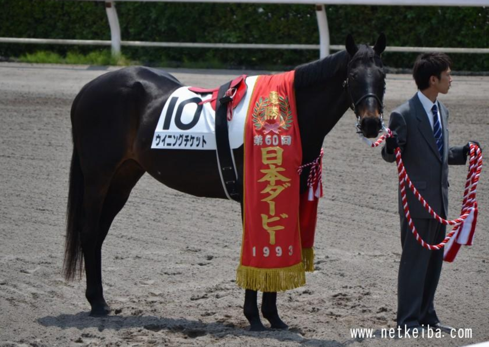

| Year | Race | Grade | Distance | Result |
|---|---|---|---|---|
| 1992 | Three-Year-Old Newcomer | Maiden | 1200m | 5th Place |
| 1992 | Three-Year-Old Newcomer | Maiden | 1700m | 1st Place |
| 1992 | Hatoban Sho | Pre-OP | 2000m | 1st Place |
| 1992 | Hopeful Stakes | G1 | 2000m | 1st Place |
| 1993 | Yayoi Sho | G2 | 2000m | 1st Place |
| 1993 | Satsuki Sho | G1 | 2000m | 1st Place |
| 1993 | Japanese Derby | G1 | 2400m | 1st Place |
| 1993 | Kyoto Shimbun Hai | G2 | 2200m | 1st Place |
| 1993 | Kikuka Sho | G1 | 3000m | 3rd Place |
| 1993 | Japan Cup | G1 | 2400m | 3rd Place |
| 1993 | Arima Kinen | G1 | 2500m | 11th Place |
| 1994 | Takumatsuyanomiya Hai | G2 | 2000m | 5th Place |
| 1994 | Sankei Sho All Comers | G3 | 2000m | 2nd Place |
| 1994 | Autumn Tenno Sho | G1 | 2000m | 8th Place |